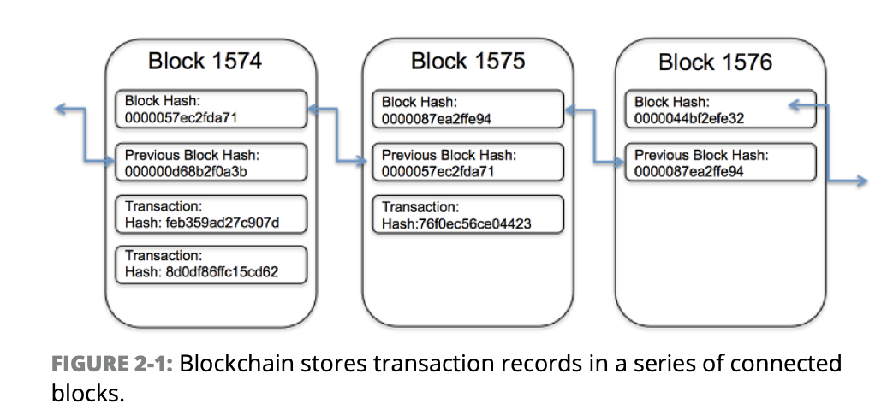

All about Blockchain!
All about Blockchain!
Learn the Ins-and-Outs about the Technology That will Lead Us to the Next Generation!
What is Blockchain Technology?
Blockchain in the most simplest words, is a chain that connects different blocks or nodes
Blocks record and confirm the time and sequence of transactions, which are then logged into the Blockchain
within a discrete network governed by rules agreed on by the network participants.

Each block contains a hash code, timestamped batches of recent valid transactions, and the hash of the previous block.
The previous block hash links the blocks together and prevents any block (node) from being changed or inserted between two existing blocks.
In this way, each subsequent block strengthens the verification of the previous block and hence, the entire blockchain.
In other words, the method renders the blockchain tamper-evident, lending to the key attribute of immutability.
(Image by Investopedia)
Transparency with Blockchain
Due to the decentralized nature of blockchain technology (i.e., Bitcoin networks), all activity on the network can be transparently
viewed by either having a personal node or using blockchain explorers that allow anyone to see transactions occuring live.
Each node has its own copy of the chain that gets updated as fresh blocks are confirmed and added.
Security of Blockchain
New blocks on the blockchain are always stored linearly and chronologically. After a block has been added to the end of the blockchain,
it is extremely difficult to go back and alter the contents of the block unless a majority of the network has reached consensus to do so.
This is mostly because each block contains it's own hash, along with the hash of the block before it and the previously mentioned time stamp.
For example , let's say a hacker who is apart of the blockchain network wants to change the blockchain and steal some cryptocurrency. If they were to change their own node,
it would no longer match everyone else's copy. Thus, when everyone else cross-references their copies against each other, they would see the one changed copy stand out, which would be seen as illegitimate.
It is relatively difficult for a hacker to succeed in a such task in the first place. It requires 51% of more of the nodes altered, which would take lost of materials and energy beacuse they would each
have different time stamps and hashes.
Applications of Blockchain on a World Scale
There are many applications of blockchain technology outside of the world finance. We will first discuss various global impacts from blockchain technology for issues
that require a large scale of attention.
HealthCare
Healthcare providers can leverage blockchain to securely store their patients' medical records.
When a medical record is generated and signed, it can be written into the blockchain, which provides patients
with the proof and confidenece that the record cannot be changed or baised. In context, these personal health records can
be encoded with a hash and stored on the chain, making them only accessible to by certain individuals.
Property Records
The idea of verifying and getting rid of the chain of passing a document to various stakeholders has been envisioned by many over the years.
However, none of them have been able to create an efficient solution until blockchain came along in our lives.
Blockchain has the potential to eliminate the need for scanning documents and tracking down physial files in a local recording office.
To provide more context, if property ownership is stored and verified on the blockchain, owners can trust their deed is accurate and
permanently recorded not having to worry about any scams.
Supply Chains
One prominent example of blockchain having a positive impact on today's processes is on the supply chain, and more specifically, how IBM
manages their supply chain efficiently through decentralized procceses.
In the IBM Food Trust, suppliers can use blockchain to record the origins of materials that they have purchaased. In turn, this allows them to verifiy
the authenticity of not only their products but also common labels such as "Organic", "Local", and "Fair Trade".
Voting Systems
One of the biggest applications of blockchain and that is currently in the works by various government companies around the world is decentralizing the
political voting system.
Voting with blockchain carries the potential to eliminate election fraud and boost voter turnout, as was initially tested in the November 2018 midterm
elections in West Virginia, USA. Using blockchain in this way would make votes nearly impossible to tamper with.
The blockchain protocol would also maintain transparency in the electoral proccess, reducing the personnel needed to conduct an
election and providing officials with nearly instant results. This would eliminate the need for recounts or any real concern that fraud might
threaten the election.
Pros and Cons of Blockchain
(Accuracy of the Chain)
- Transactions on the network are approved by thousands of computers
- Removes all human involvement in the verification process, resulting in less human-error
- If a computer were to make a computational mistake, the error would only be made to one copy
of the blockchain. For the error to spread in the first place, it would need to be made by at least 51%
of the network's computers - almost impossible for large and growing networks the size of Bitcoin.
(Cost Reductions)
- Blockchain eliminates the need for third-party verification, and their associated costs.
(Efficient Transactions)
- Typical transactions placed through a central authority (for example, financial institutions) can
take up to a few days to settle.
- Blockchain works 24 hours 7 days a wekk and 365 days a year. Transactions can be completed in as little
as 10 minutes and be considered secured after just a few hours.
- This is particularly useful for cross-border trades, which usually take much longer because of time
zone issues and the fact that all parties must confirm payment processing.
(Diverse Users)
- Blockchain can be used by anyone, regardless of ethnicity, gender, or cultural background
- According to The World Bank, an estimated 1.7 billion adults do not have bank accounts in developing countries. Blockchain allows them to store their
financial assets in hidden locations without any biased leaving them subject to robbery or unnecessary violance.
(Technology Cost)
- Blockchain processes take up too much power.
- To provide some context of how much, in the real world, the power from millions of computer on a bitcoin network is close to what Denmark consumes
annually.
(Processing Inefficiency)
- Bitcoin is a perfect example for the possible inefficiencies of blockchain. Bitcoin's POW system
takes about 10 minutes to add a new block to the network. At that rate, it's estimated that the blockchain
network can only manage about seven transactions per second (TPS).
- It should be noted that compared to the Bitcoin network, Visa's network can process 24,000 TPS
- There are solutions to this problem that are being made.
- For example, currently, Etheruem is working on a more efficient
network with their project, "Ethereum 2.0".
(Illegal Activity)
- Blockchain also prompts for illegal trading and activity on the blockchain network
- The most cited example of of blockchain being used for such activities is the case study of Silk Road.
Silk Road is an online dark web illegal-drug and money laundering marketplace operating from Feb 2011 until Oct 2013.